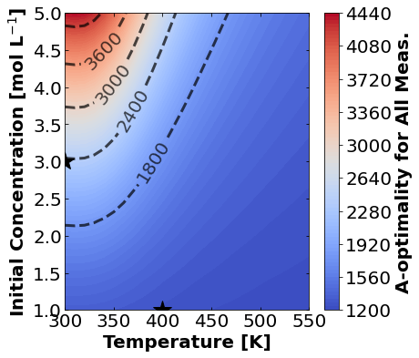
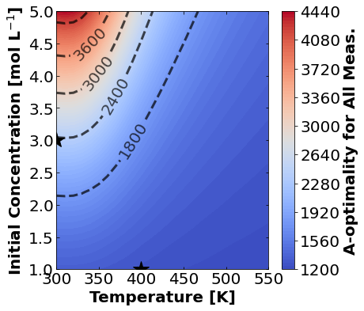
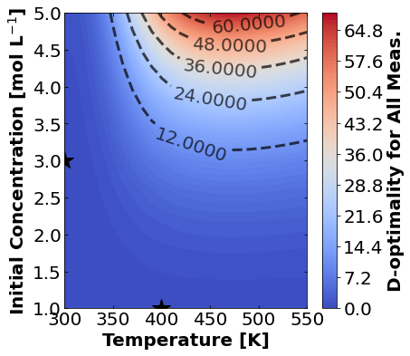
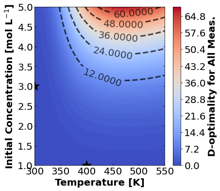
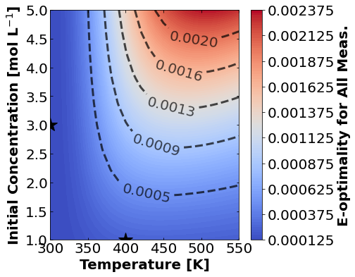
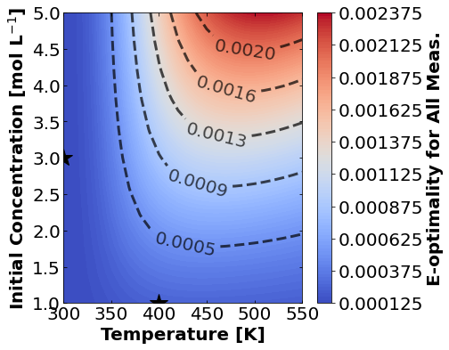

16.1. Model-Based Design of Experiments#
This notebook is based on an example from:
Jialu Wang and Alexander Dowling (2022), Pyomo.DoE: An Open-Source Package for Model-Based Design of Experiments in Python . AIChE Journal, 68(12), e17813.
16.1.1. Learning Objectives#
Practice nonlinear regression basics on a reaction kinetics example
Interpret eigendecomposition of Fisher information matrix to determine which paramters (if any) are not identifiable
Use A-, D-, and E-optimality to recommend the next experiment that maximizes information gain
16.1.2. Import Modules#
import matplotlib.pyplot as plt
import numpy as np
import pandas as pd
import scipy.optimize as optimize
import scipy.linalg as linalg
from matplotlib import cm
16.1.3. Mathematical Model for Reaction Kinetics Example#
Consider two chemical reactions that convert molecule \(A\) to desired product \(B\) and a less valuable side-product \(C\).
\(A \overset{k_1}{\rightarrow} B \overset{k_2}{\rightarrow} C\)
Our ultimate goal is to design a large-scale continous reactor that maximizes the production of \(B\). This general sequential reactions problem is widely applicable to CO\(_2\) capture and industry more broadly (petrochemicals, pharmasuticals, etc.).
The rate laws for these two chemical reactions are:
\(r_A = -k_1 C_A\)
\(r_B = k_1 C_A - k_2 C_B\)
\(r_C = k_2 C_B\)
Here, \(C_A\), \(C_B\), and \(C_C\) are the concentrations of each species. The rate constants \(k_1\) and \(k_2\) depend on temperature as follows:
\(k_1 = A_1 \exp{\frac{-E_1}{R T}}\)
\(k_2 = A_2 \exp{\frac{-E_2}{R T}}\)
\(A_1, A_2, E_1\), and \(E_2\) are fitted model parameters. \(R\) is the ideal-gas constant and \(T\) is absolute temperature.
The concenration in a batch reactor evolve with time per the following differential equations:
This is a linear system of differential equations. Assuming the feed is only species \(A\), i.e.,
When the temperature is constant, it leads to the following analytic solution:
def batch_rxn_model(theta, t, CA0, T):
'''
Predict batch reaction performance
Arugments:
t: time, [hour], scalar or Numpy array
theta: fitted parameters: A1, A2, E1, E2
CA0: initial concentration, [mol/L], scalar or numpy array
T: temperature, [K], scalar or Numpy array
Returns:
CA, CB, CC: Concentrations at times t, [mol/L], three scalars or numpy arrays
'''
def kinetics(A, E, T):
''' Computes kinetics from Arrhenius equation
Arguments:
A: pre-exponential factor, [1 / hr]
E: activation energy, [kJ / mol]
T: temperature, [K]
Returns:
k: reaction rate coefficient, [1/hr] or [1/hr*L/mol]
'''
R = 8.31446261815324 # J / K / mole
return A * np.exp(-E*1000/(R*T))
# units: [1/hr]
k1 = kinetics(theta[0], theta[2], T)
# units: [1/hr]
k2 = kinetics(theta[1], theta[3], T)
# units: [mol / L]
CA = CA0 * np.exp(-k1*t);
CB = k1*CA0/(k2-k1) * (np.exp(-k1*t) - np.exp(-k2*t));
CC = CA0 - CA - CB;
return CA, CB, CC
Now let’s test the code by running it.
theta_true = [85., 370., 7.5, 15]
time_exp = np.linspace(0,1,11) # hr
CA0_exp1 = 1.0 # mol/L
T_exp1 = 400 # K
CA_exp1, CB_exp1, CC_exp1 = batch_rxn_model(theta_true, time_exp, CA0_exp1, T_exp1)
16.1.4. Generate Synthetic Experimental Dataset#
Let’s construct a dataset containing:
Batch experiment at \(T=400\) K and \(C_{AO}=1.0\) mol/L
Batch experiment at \(T=300\) K and \(C_{AO}=3.0\) mol/L
We also simulated the first experiment. Let’s simulate the second.
theta_true = [85., 370., 7.5, 15]
CA0_exp2 = 3.0 # mol/L
T_exp2 = 300 # K
CA_exp2, CB_exp2, CC_exp2 = batch_rxn_model(theta_true, time_exp, CA0_exp2, T_exp2)
Next let’s add random normally distributed noise.
n_time = len(time_exp)
noise_std_dev = 0.05
CA_exp1 += noise_std_dev*np.random.normal(size=n_time)
CA_exp2 += noise_std_dev*np.random.normal(size=n_time)
CB_exp1 += noise_std_dev*np.random.normal(size=n_time)
CB_exp2 += noise_std_dev*np.random.normal(size=n_time)
CC_exp1 += noise_std_dev*np.random.normal(size=n_time)
CC_exp2 += noise_std_dev*np.random.normal(size=n_time)
Now we’ll package these into a numpy array:
# Create empty array for experiment 1
exp1 = np.zeros((n_time,7))
# Assign 1 to column 0. This is the experiment number.
exp1[:,0] = 1
# Copy CA0 into column 1
exp1[:,1] = CA0_exp1
# Copy T into column 2
exp1[:,2] = T_exp1
# Copy time data into column 3
exp1[:,3] = time_exp
# Copy concentration data into remaining columns
exp1[:,4] = CA_exp1
exp1[:,5] = CB_exp1
exp1[:,6] = CC_exp1
print(exp1)
[[ 1.00000000e+00 1.00000000e+00 4.00000000e+02 0.00000000e+00
1.07330538e+00 -1.73656971e-02 6.63565147e-02]
[ 1.00000000e+00 1.00000000e+00 4.00000000e+02 1.00000000e-01
4.07322347e-01 4.96785209e-01 1.22818333e-01]
[ 1.00000000e+00 1.00000000e+00 4.00000000e+02 2.00000000e-01
8.28389000e-02 4.19866422e-01 3.76212670e-01]
[ 1.00000000e+00 1.00000000e+00 4.00000000e+02 3.00000000e-01
5.90799142e-02 4.31187212e-01 4.79736696e-01]
[ 1.00000000e+00 1.00000000e+00 4.00000000e+02 4.00000000e-01
-2.00161740e-02 3.26774028e-01 7.12349757e-01]
[ 1.00000000e+00 1.00000000e+00 4.00000000e+02 5.00000000e-01
-3.56245472e-02 2.62694835e-01 7.27054197e-01]
[ 1.00000000e+00 1.00000000e+00 4.00000000e+02 6.00000000e-01
1.44852876e-02 4.21891814e-02 9.22226989e-01]
[ 1.00000000e+00 1.00000000e+00 4.00000000e+02 7.00000000e-01
2.80191186e-03 1.06483796e-01 8.48191581e-01]
[ 1.00000000e+00 1.00000000e+00 4.00000000e+02 8.00000000e-01
4.74370466e-03 5.97742592e-02 9.90692790e-01]
[ 1.00000000e+00 1.00000000e+00 4.00000000e+02 9.00000000e-01
-9.81051326e-02 1.04631939e-02 9.24865577e-01]
[ 1.00000000e+00 1.00000000e+00 4.00000000e+02 1.00000000e+00
5.09340585e-02 -3.86005366e-02 9.26026256e-01]]
# Create empty array for experiment 2
exp2 = np.zeros((n_time,7))
# Assign 2 to column 0. This is the experiment number.
exp2[:,0] = 2
# Copy CA0 into column 1
exp2[:,1] = CA0_exp2
# Copy T into column 2
exp2[:,2] = T_exp2
# Copy time data into column 3
exp2[:,3] = time_exp
# Copy concentration data into remaining columns
exp2[:,4] = CA_exp2
exp2[:,5] = CB_exp2
exp2[:,6] = CC_exp2
print(exp2)
[[2.00000000e+00 3.00000000e+00 3.00000000e+02 0.00000000e+00
3.03032330e+00 3.46743034e-02 7.48390441e-02]
[2.00000000e+00 3.00000000e+00 3.00000000e+02 1.00000000e-01
2.01053896e+00 9.72455517e-01 1.49644042e-03]
[2.00000000e+00 3.00000000e+00 3.00000000e+02 2.00000000e-01
1.28796917e+00 1.55828468e+00 7.25268353e-02]
[2.00000000e+00 3.00000000e+00 3.00000000e+02 3.00000000e-01
8.27077853e-01 1.89394720e+00 3.22703321e-01]
[2.00000000e+00 3.00000000e+00 3.00000000e+02 4.00000000e-01
5.08443272e-01 1.86275905e+00 5.02866094e-01]
[2.00000000e+00 3.00000000e+00 3.00000000e+02 5.00000000e-01
3.94949438e-01 1.97022256e+00 6.43069416e-01]
[2.00000000e+00 3.00000000e+00 3.00000000e+02 6.00000000e-01
2.15062932e-01 1.88979026e+00 8.89368985e-01]
[2.00000000e+00 3.00000000e+00 3.00000000e+02 7.00000000e-01
1.09264454e-01 1.83822195e+00 1.01858633e+00]
[2.00000000e+00 3.00000000e+00 3.00000000e+02 8.00000000e-01
1.70273100e-01 1.74271922e+00 1.14970870e+00]
[2.00000000e+00 3.00000000e+00 3.00000000e+02 9.00000000e-01
9.16208254e-02 1.57388833e+00 1.30139948e+00]
[2.00000000e+00 3.00000000e+00 3.00000000e+02 1.00000000e+00
1.27436637e-01 1.50854813e+00 1.51276171e+00]]
# Vertically stack data
exps = np.vstack((exp1,exp2))
# Create a dataframe with specific columns
# Pro Tip: Use 'temp' for temeprature instead of 'T'.
# 'T' can be confused with transpose.
df = pd.DataFrame(exps, columns=['exp', 'CA0','temp','time', 'CA','CB','CC'])
df.head()
| exp | CA0 | temp | time | CA | CB | CC | |
|---|---|---|---|---|---|---|---|
| 0 | 1.0 | 1.0 | 400.0 | 0.0 | 1.073305 | -0.017366 | 0.066357 |
| 1 | 1.0 | 1.0 | 400.0 | 0.1 | 0.407322 | 0.496785 | 0.122818 |
| 2 | 1.0 | 1.0 | 400.0 | 0.2 | 0.082839 | 0.419866 | 0.376213 |
| 3 | 1.0 | 1.0 | 400.0 | 0.3 | 0.059080 | 0.431187 | 0.479737 |
| 4 | 1.0 | 1.0 | 400.0 | 0.4 | -0.020016 | 0.326774 | 0.712350 |
Finally, let’s plot the data and the true model.
def plot_data_and_model(theta_, data1):
'''
Plot regression results
Args:
theta: model parameters
data: Pandas data frame
Returns:
Nothing
'''
# Set axed font size
fs = 20
# loop over experiments
for i in data1.exp.unique():
## Plot 1: Data Versus Prediction
# delcare figure object
fig, ax = plt.subplots(figsize=(6,4))
# select the rows that correspond to the specific experiment number
j = (data1.exp == i)
# determine experiment conditions
CA0_ = float(data1.CA0[j].mode())
T_ = float(data1.temp[j].mode())
# Plot dataset 1
plt.plot(data1.time[j], data1.CA[j], marker='o',markersize=16,linestyle="",color="blue",label="$C_{A}$ Data")
plt.plot(data1.time[j], data1.CB[j], marker='s',markersize=16,linestyle="",color="green",label="$C_{B}$ Data")
plt.plot(data1.time[j], data1.CC[j], marker='^',markersize=16,linestyle="",color="red",label="$C_{C}$ Data")
# determine time set
t_plot = np.linspace(np.min(data1.time[j]),np.max(data1.time[j]),21)
# Evaluate model
CA_, CB_, CC_ = batch_rxn_model(theta_,t_plot,CA0_,T_)
# Plot model predictions
plt.plot(t_plot, CA_, linestyle="-",color="blue",label="$C_{A}$ Model",linewidth=4)
plt.plot(t_plot, CB_, linestyle=":",color="green",label="$C_{B}$ Model",linewidth=4)
plt.plot(t_plot, CC_, linestyle="--",color="red",label="$C_{C}$ Model",linewidth=4)
# Add "extras" to the plot
plt.xlabel("Time [hours]",fontsize = fs, fontweight = 'bold')
plt.ylabel("Concentration [mol L$^{-1}$]",fontsize = fs, fontweight = 'bold')
plt.title("Experiment "+str(round(i))+": T="+str(T_)+" K, CA$_0$="+str(CA0_)+" mol L$^{-1}$",fontsize=fs,loc='left', fontweight='bold')
plt.legend(fontsize=fs,loc='center left',bbox_to_anchor=(1.0, 0.5))
# define tick size
plt.xticks(fontsize=fs)
plt.yticks(fontsize=fs)
plt.tick_params(direction="in",top=True, right=True)
plt.grid(False)
plt.show()
plot_data_and_model(theta_true, df)


16.1.5. Perform Nonlinear Regression#
We esimate the unknown model parameters from data by solving a (weighted) nonlinear regression problem.
Here \(y_d = C_{B,d}\) is the measured data, \(\mathbf{f}(\cdot,\cdot)\) is the mathematical model, \(\mathbf{\theta} = [A_1, A_2, E_1, E_2]\) are the regressed parameters, \(\mathbf{x} = [C_{A0}, T, t]\) are the conditions for each data point (experiment) \(d\), and \(\mathbf{W} = \mathbf{I}\) is the weight matrix. For the code below, we are minimizing the sum of squared error using only data for \(C_B\).
16.1.5.1. Solve Nonlinear Least Squares Problem#
# nonlinear parameter estimation with full physics model
def regression_func(theta, data):
'''
Function to define regression function for least-squares fitting
Note: This only uses CB measurements
Arguments:
theta: parameter vector
data: Pandas data frame
Returns:
e: residual vector
'''
# determine number of entries in data frame
n = len(data)
# initialize matrix of residuals
# rows: each row of Pandas data frame
# columns: species CA, CB, CC
e = np.zeros(n)
# loop over experiments
for i in data.exp.unique():
# select the rows that correspond to the specific experiment number
j = (data.exp == i)
# determine experiment conditions
CA0_ = float(data.CA0[j].mode())
T_ = float(data.temp[j].mode())
# determine experiment time
t = data.time[j].to_numpy()
CA, CB, CC = batch_rxn_model(theta,t,CA0_,T_)
# Only use CB measurements
e[j] = CB - data.CB[j]
return e
Let’s test our function.
e_test = regression_func(theta_true, df)
print(e_test)
[ 0.0173657 -0.02647976 0.08611161 -0.0152367 -0.01741918 -0.043441
0.10923293 -0.00343846 0.00974479 0.03619475 0.06981694 -0.0346743
0.00872662 -0.01749875 -0.06312433 0.08774574 -0.00580498 0.0246635
-0.01057614 -0.02141178 0.03251863 -0.01876837]
Finally, we can compute the best fit estimate.
# Initial guess
theta0 = [85., 370., 7.5, 15]
# Bounds
bnds = ([50, 300, 5, 10,], [200, 400, 20, 50])
# Define function that includes data
my_func = lambda theta_ : regression_func(theta_, df)
# Perform nonlinear least squares
nl_results = optimize.least_squares(my_func, theta0, bounds=bnds, method='trf',verbose=2)
Iteration Total nfev Cost Cost reduction Step norm Optimality
0 1 2.2477e-02 8.50e-02
1 2 2.2148e-02 3.30e-04 5.04e+00 8.77e-03
2 3 2.1796e-02 3.52e-04 2.12e+01 1.42e-02
3 4 2.1765e-02 3.15e-05 1.96e+00 3.07e-04
4 5 2.1732e-02 3.29e-05 2.52e+00 1.26e-04
5 6 2.1731e-02 1.05e-06 8.33e-02 1.68e-05
6 7 2.1731e-02 1.39e-08 1.25e-03 9.82e-08
7 8 2.1731e-02 9.37e-17 4.26e-06 2.79e-09
`gtol` termination condition is satisfied.
Function evaluations 8, initial cost 2.2477e-02, final cost 2.1731e-02, first-order optimality 2.79e-09.
theta_hat = nl_results.x
print("theta_hat =",theta_hat)
theta_hat = [ 89.52352889 400. 7.62016597 15.17465026]
16.1.5.2. Visualize Results#
First let’s plot the data and model predictions.
plot_data_and_model(theta_hat, df)
Next, let’s look at the residuals. Recall, we only used \(C_{B}\) in our regression formulation.
CB_residuals = regression_func(theta_hat, df)
# define font size
fs = 20
plt.hist(CB_residuals,color='green')
plt.xlabel("$C_{B}$ residuals [mol L$^{-1}$]",fontsize=fs,fontweight = 'bold')
plt.ylabel("Count",fontsize=fs,fontweight = 'bold')
# define tick size
plt.xlim((-0.07,0.07))
plt.xticks(fontsize=fs,ticks=np.arange(-0.06,0.07,0.03))
plt.yticks(fontsize=fs)
plt.tick_params(direction="in",top=True, right=True)
# finish plot
plt.show()

16.1.5.3. Estimate Uncertainty#
First let’s estimate the variance of the residuals.
sigre = (CB_residuals.T @ CB_residuals)/(len(CB_residuals) - len(theta_hat))
How does the standard deviation of the residuals compare to the standard deviation of the measurement noise?
print("Estimated Standard Deviation of Residuals =",np.sqrt(sigre),"mol/L")
print("Standard Deviation of Measurement Error in Synthetic Data =",noise_std_dev,"mol/L")
Estimated Standard Deviation of Residuals = 0.049137624893656175 mol/L
Standard Deviation of Measurement Error in Synthetic Data = 0.05 mol/L
Estimating the covariance matrix using a linearization approximation is easy!
Sigma_theta = sigre * np.linalg.inv(nl_results.jac.T @ nl_results.jac)
print("Covariance matrix:\n",Sigma_theta)
Covariance matrix:
[[ 2.77141940e+03 -9.72902361e+02 7.77883866e+01 -5.94859480e+00]
[-9.72902361e+02 1.29273200e+04 -2.65789266e+01 8.23859555e+01]
[ 7.77883866e+01 -2.65789266e+01 2.18854666e+00 -1.61348238e-01]
[-5.94859480e+00 8.23859555e+01 -1.61348238e-01 5.28489135e-01]]
Recall the rows/colums are \(A_1\), \(A_2\), \(E_1\), and \(E_2\).
We can easily convert this to a correlation matrix.
corr_theta = Sigma_theta.copy()
for r in range(len(theta_hat)):
for c in range(len(theta_hat)):
corr_theta[r,c] = corr_theta[r,c]/np.sqrt(Sigma_theta[r,r])/np.sqrt(Sigma_theta[c,c])
print("Correlation matrix:\n",corr_theta)
Correlation matrix:
[[ 1. -0.16254136 0.99881656 -0.15543372]
[-0.16254136 1. -0.15801754 0.99673774]
[ 0.99881656 -0.15801754 1. -0.15002661]
[-0.15543372 0.99673774 -0.15002661 1. ]]
Discussion: Why are the pairs \(A_1\), \(E_2\) and \(A_2\), \(E_2\) highly correlated when measuring only \(C_B\)?
16.1.6. Fisher Information Matrix#
What is the value of measuring other physical quantities such as \(C_A\) or \(C_C\) in this example?
How can we systematically determine the most informative set of experiments?
The remainder of this notebook develops a mathematical framework to answer these (and related) questions.
16.1.6.1. Model Sensitivity#
The first step of calculating the Fisher Information Matrix (FIM) is computing the sensitivity of all model outputs to each model parameter.
def calc_model_output(theta_,data):
'''
Assembles matrix out model outputs (columns) by experimental conditions (rows)
Arguments:
theta_: values of theta parameters, numpy array
data: data frame of experimental conditions
Returns:
model_output: matrix
'''
# Allocate matrix of model outputs
model_output = np.zeros((len(data),3))
# Iterate over rows in pandas dataframe (each row is an experiment)
for i,r in data.iterrows():
# Evaluate model and store results
model_output[i,:] = batch_rxn_model(theta_, r.time, r.CA0, r.temp)
return model_output
# Test function at nominal values
print(calc_model_output(theta_hat,df))
[[ 1.00000000e+00 -0.00000000e+00 0.00000000e+00]
[ 4.04359390e-01 4.71983465e-01 1.23657145e-01]
[ 1.63506516e-01 5.01791382e-01 3.34702102e-01]
[ 6.61153952e-02 4.07750121e-01 5.26134484e-01]
[ 2.67343809e-02 2.99829192e-01 6.73436427e-01]
[ 1.08102979e-02 2.10144215e-01 7.79045487e-01]
[ 4.37124548e-03 1.43544280e-01 8.52084474e-01]
[ 1.76755416e-03 9.66294369e-02 9.01603009e-01]
[ 7.14727120e-04 6.44932646e-02 9.34792008e-01]
[ 2.89006622e-04 4.28251919e-02 9.56885801e-01]
[ 1.16862541e-04 2.83494368e-02 9.71533701e-01]
[ 3.00000000e+00 -0.00000000e+00 0.00000000e+00]
[ 1.96746609e+00 9.83700121e-01 4.88337934e-02]
[ 1.29030760e+00 1.54309287e+00 1.66599535e-01]
[ 8.46212147e-01 1.83168855e+00 3.22099301e-01]
[ 5.54964567e-01 1.94951127e+00 4.95524160e-01]
[ 3.63957988e-01 1.96156445e+00 6.74477558e-01]
[ 2.38691666e-01 1.90993601e+00 8.51372321e-01]
[ 1.56539253e-01 1.82173268e+00 1.02172806e+00]
[ 1.02661890e-01 1.71427939e+00 1.18305872e+00]
[ 6.73279290e-02 1.59852535e+00 1.33414672e+00]
[ 4.41551390e-02 1.48127445e+00 1.47457041e+00]]
We’ll use finite difference to estimate the sensitivities.
def calc_model_sensitivity(theta_,data,verbose=False):
'''
Estimate the model sensitivity matrix using forward finite difference
Arguments:
model_function: Python function that computes model outputs
theta_: nominal value of theta
exp_design_df: data frame containing experimental data
'''
# Evaluate model at nominal point
nominal_output = calc_model_output(theta_,data)
# Extract number of experiments and number of measured/output variables
(n_exp, n_output) = nominal_output.shape
# Set finite difference step size
eps = 1E-5
# Extract number of parameters
n_param = len(theta_)
# Create list to store model sensitity matrices
model_sensitivity = []
# Loop over number of outputs
for i in range(n_output):
# Allocate empty sensitivty matrix
model_sensitivity.append(np.zeros((n_exp,n_param)))
# Loop over parameters
for p in range(n_param):
# Create perturbation vector
perturb = np.zeros(n_param)
perturb[p] = eps
# Forward and backward perturbation simulations
output_forward = calc_model_output(theta_ + perturb, data)
output_backward = calc_model_output(theta_ - perturb, data)
sensitivity = (output_forward - output_backward) / (2*eps)
if verbose:
print("\nparam ",p)
print("sens:\n",sensitivity)
# Loop over outputs
for o in range(n_output):
# Copy sensitivity results
model_sensitivity[o][:,p] = sensitivity[:,o].copy()
return model_sensitivity
model_sensitivity = calc_model_sensitivity(theta_hat, df)
print("CA sensitivity:\n",model_sensitivity[0])
print("CB sensitivity:\n",model_sensitivity[1])
print("CC sensitivity:\n",model_sensitivity[2])
CA sensitivity:
[[ 0.00000000e+00 0.00000000e+00 0.00000000e+00 0.00000000e+00]
[-4.08973715e-03 0.00000000e+00 1.10087602e-01 0.00000000e+00]
[-3.30744724e-03 0.00000000e+00 8.90299115e-02 0.00000000e+00]
[-2.00609602e-03 0.00000000e+00 5.40001210e-02 0.00000000e+00]
[-1.08157835e-03 0.00000000e+00 2.91139413e-02 0.00000000e+00]
[-5.46682953e-04 0.00000000e+00 1.47156195e-02 0.00000000e+00]
[-2.65267663e-04 0.00000000e+00 7.14047869e-03 0.00000000e+00]
[-1.25140715e-04 0.00000000e+00 3.36853954e-03 0.00000000e+00]
[-5.78306552e-05 0.00000000e+00 1.55668639e-03 0.00000000e+00]
[-2.63074145e-05 0.00000000e+00 7.08143355e-04 0.00000000e+00]
[-1.18196112e-05 0.00000000e+00 3.18160461e-04 0.00000000e+00]
[ 0.00000000e+00 0.00000000e+00 0.00000000e+00 0.00000000e+00]
[-9.27138054e-03 0.00000000e+00 3.32756203e-01 0.00000000e+00]
[-1.21607512e-02 0.00000000e+00 4.36457696e-01 0.00000000e+00]
[-1.19629328e-02 0.00000000e+00 4.29357857e-01 0.00000000e+00]
[-1.04607398e-02 0.00000000e+00 3.75443121e-01 0.00000000e+00]
[-8.57547947e-03 0.00000000e+00 3.07779837e-01 0.00000000e+00]
[-6.74878601e-03 0.00000000e+00 2.42218556e-01 0.00000000e+00]
[-5.16366962e-03 0.00000000e+00 1.85327642e-01 0.00000000e+00]
[-3.87022661e-03 0.00000000e+00 1.38905086e-01 0.00000000e+00]
[-2.85545235e-03 0.00000000e+00 1.02484142e-01 0.00000000e+00]
[-2.08074284e-03 0.00000000e+00 7.46792867e-02 0.00000000e+00]]
CB sensitivity:
[[ 0.00000000e+00 0.00000000e+00 0.00000000e+00 0.00000000e+00]
[ 3.07873165e-03 -2.66175046e-04 -8.28733420e-02 3.20134993e-02]
[ 1.34287935e-03 -6.07406925e-04 -3.61476451e-02 7.30542616e-02]
[-1.72985265e-04 -7.88588542e-04 4.65641992e-03 9.48454014e-02]
[-8.57254454e-04 -8.17387005e-04 2.30755875e-02 9.83090598e-02]
[-9.92934225e-04 -7.51696710e-04 2.67278175e-02 9.04083334e-02]
[-8.78883599e-04 -6.42535961e-04 2.36578011e-02 7.72793131e-02]
[-6.90748347e-04 -5.23129458e-04 1.85935737e-02 6.29180117e-02]
[-5.08684211e-04 -4.11524686e-04 1.36927688e-02 4.94950431e-02]
[-3.60213372e-04 -3.15630702e-04 9.69622864e-03 3.79616478e-02]
[-2.48833728e-04 -2.37449162e-04 6.69810980e-03 2.85585699e-02]
[ 0.00000000e+00 0.00000000e+00 0.00000000e+00 0.00000000e+00]
[ 8.79791077e-03 -1.18304205e-04 -3.15763048e-01 1.89716373e-02]
[ 1.07608610e-02 -3.90302757e-04 -3.86214680e-01 6.25901788e-02]
[ 9.61943550e-03 -7.28308736e-04 -3.45248135e-01 1.16793875e-01]
[ 7.33999079e-03 -1.07940253e-03 -2.63437301e-01 1.73096381e-01]
[ 4.89766858e-03 -1.41293043e-03 -1.75780683e-01 2.26581962e-01]
[ 2.72624353e-03 -1.71236414e-03 -9.78467500e-02 2.74600093e-01]
[ 9.75692482e-04 -1.97001464e-03 -3.50182728e-02 3.15917734e-01]
[-3.43443718e-04 -2.18361210e-03 1.23264298e-02 3.50170895e-01]
[-1.28148652e-03 -2.35410502e-03 4.59934290e-02 3.77511676e-01]
[-1.90864652e-03 -2.48425414e-03 6.85026312e-02 3.98382796e-01]]
CC sensitivity:
[[ 0.00000000e+00 0.00000000e+00 0.00000000e+00 0.00000000e+00]
[ 1.01100550e-03 2.66175046e-04 -2.72142604e-02 -3.20134993e-02]
[ 1.96456789e-03 6.07406925e-04 -5.28822664e-02 -7.30542616e-02]
[ 2.17908129e-03 7.88588544e-04 -5.86565410e-02 -9.48454014e-02]
[ 1.93883281e-03 8.17387008e-04 -5.21895289e-02 -9.83090598e-02]
[ 1.53961718e-03 7.51696716e-04 -4.14434369e-02 -9.04083334e-02]
[ 1.14415126e-03 6.42535963e-04 -3.07982798e-02 -7.72793131e-02]
[ 8.15889062e-04 5.23129456e-04 -2.19621133e-02 -6.29180117e-02]
[ 5.66514868e-04 4.11524687e-04 -1.52494552e-02 -4.94950431e-02]
[ 3.86520788e-04 3.15630699e-04 -1.04043720e-02 -3.79616478e-02]
[ 2.60653343e-04 2.37449160e-04 -7.01627026e-03 -2.85585699e-02]
[ 0.00000000e+00 0.00000000e+00 0.00000000e+00 0.00000000e+00]
[ 4.73469769e-04 1.18304205e-04 -1.69931546e-02 -1.89716373e-02]
[ 1.39989015e-03 3.90302757e-04 -5.02430163e-02 -6.25901788e-02]
[ 2.34349725e-03 7.28308736e-04 -8.41097218e-02 -1.16793875e-01]
[ 3.12074897e-03 1.07940253e-03 -1.12005820e-01 -1.73096381e-01]
[ 3.67781090e-03 1.41293043e-03 -1.31999154e-01 -2.26581962e-01]
[ 4.02254249e-03 1.71236414e-03 -1.44371806e-01 -2.74600093e-01]
[ 4.18797714e-03 1.97001464e-03 -1.50309369e-01 -3.15917734e-01]
[ 4.21367035e-03 2.18361210e-03 -1.51231516e-01 -3.50170895e-01]
[ 4.13693888e-03 2.35410502e-03 -1.48477571e-01 -3.77511676e-01]
[ 3.98938934e-03 2.48425414e-03 -1.43181918e-01 -3.98382796e-01]]
We are now ready to compute the FIM for each of the three measurements:
16.1.6.2. FIM By Measurement Type#
# Allocate list of FIM
FIM = []
measurements = ['CA','CB','CC']
for i in range(len(measurements)):
FIM.append( 1/noise_std_dev**2 * model_sensitivity[i].T @ model_sensitivity[i])
print("FIM for",measurements[i],"measurements:\n",FIM[i],"\n")
FIM for CA measurements:
[[ 2.77135943e-01 0.00000000e+00 -9.82726797e+00 0.00000000e+00]
[ 0.00000000e+00 0.00000000e+00 0.00000000e+00 0.00000000e+00]
[-9.82726797e+00 0.00000000e+00 3.49495231e+02 0.00000000e+00]
[ 0.00000000e+00 0.00000000e+00 0.00000000e+00 0.00000000e+00]]
FIM for CB measurements:
[[ 1.56846256e-01 -9.56610562e-03 -5.57644320e+00 1.55420093e+00]
[-9.56610562e-03 1.21838382e-02 3.47843876e-01 -1.90081115e+00]
[-5.57644320e+00 3.47843876e-01 1.98719040e+02 -5.63237399e+01]
[ 1.55420093e+00 -1.90081115e+00 -5.63237399e+01 2.98442315e+02]]
FIM for CC measurements:
[[ 5.34873217e-02 2.49460063e-02 -1.85411508e+00 -3.88011717e+00]
[ 2.49460063e-02 1.21838382e-02 -8.68404444e-01 -1.90081115e+00]
[-1.85411508e+00 -8.68404444e-01 6.47801357e+01 1.36021753e+02]
[-3.88011717e+00 -1.90081115e+00 1.36021753e+02 2.98442315e+02]]
Discussion:
What would measuring only \(C_{A}\) only provide information about \(A_1\) and \(E_1\)?
If you could only choose to measure ONE species (\(C_A\), \(C_B\), or \(C_C\)), which would you choose and why?
16.1.6.3. Combined FIM#
Assuming the measurement errors across species are independent, we can compute a FIM for measuring all three species with simple addition.
FIM_total = FIM[0] + FIM[1] + FIM[2]
print(FIM_total)
[[ 4.87469521e-01 1.53799007e-02 -1.72578263e+01 -2.32591624e+00]
[ 1.53799007e-02 2.43676764e-02 -5.20560568e-01 -3.80162230e+00]
[-1.72578263e+01 -5.20560568e-01 6.12994406e+02 7.96980132e+01]
[-2.32591624e+00 -3.80162230e+00 7.96980132e+01 5.96884631e+02]]
FIM.append(FIM_total)
measurements.append('all')
16.1.6.4. Eigendecomposition#
Next let us interpret the eigendecomposition of each FIM. For simplicity, we can going to drop the index \(i\). Recall \(\mathbf{M} \in \mathbb{R}^{m \times m}\) because \(\mathbf{\theta} \in \mathbb{R}^{m}\).
Here \(\mathbf{W} \in \mathbb{R}^{m \times m}\) is the matrix of eigenvectors \(\mathbf{v}_{1},\ldots,\mathbf{v}_{p}\) and \(\mathbf{\Lambda} \in \mathbb{R}^{m \times m}\) is a diagonal matrix containing the corresponding eigenvalues \(\lambda_1,\ldots,\lambda_p\). Because \(\mathbf{M}\) is a real symmetric matrix by definition, \(\mathbf{W}^{-1} = \mathbf{W}^\intercal\), and the eigendecomposition can be written as follows:
Now back to the example!
# Create empty dictionary to store eigendecompositions
eigendecompositions = {}
for i,m in enumerate(measurements):
# Create empty matrix
results_matrix = np.zeros((4,5))
# Compute eigendecomposition
w, v = linalg.eigh(FIM[i])
print("**********\nConsidering measurement",measurements[i],"")
for j in range(len(v)):
print("\neigenvalue =",w[j])
print("eigenvector:",v[:,j])
# Store results
results_matrix[j,0] = w[j]
results_matrix[j,1:] = v[:,j]
print("**********\n")
eigendecompositions[m] = pd.DataFrame(results_matrix,columns=['eigenvalue','A1', 'A2', 'E1', 'E2'])
**********
Considering measurement CA
eigenvalue = 0.0
eigenvector: [0. 1. 0. 0.]
eigenvalue = 0.0
eigenvector: [0. 0. 0. 1.]
eigenvalue = 0.0008076542403046005
eigenvector: [0.99960491 0. 0.02810742 0. ]
eigenvalue = 349.77155897475797
eigenvector: [-0.02810742 0. 0.99960491 0. ]
**********
**********
Considering measurement CB
eigenvalue = 7.417670951499084e-05
eigenvector: [-0.094524 0.99549899 -0.0025974 0.0063425 ]
eigenvalue = 0.00036021877561471074
eigenvector: [9.95126558e-01 9.45571481e-02 2.79570296e-02 6.96125711e-04]
eigenvalue = 173.47263113156728
eigenvector: [ 0.02563466 0.00267488 -0.91127572 -0.41098938]
eigenvalue = 323.8573199861445
eigenvector: [ 0.01145476 -0.00579237 -0.41083844 0.9116178 ]
**********
**********
Considering measurement CC
eigenvalue = 4.310703517123985e-06
eigenvector: [-0.38866152 0.92129245 -0.01127041 0.00595148]
eigenvalue = 0.0004773233523595857
eigenvector: [0.92086687 0.38882297 0.02861687 0.00140608]
eigenvalue = 2.3049147942710224
eigenvector: [ 0.02836407 -0.00184186 -0.90822132 0.41752379]
eigenvalue = 360.98272594326806
eigenvector: [-0.01191266 -0.00578966 0.41735846 0.90864541]
**********
**********
Considering measurement all
eigenvalue = 0.00012678747681498252
eigenvector: [-0.13608616 0.99066973 -0.00380749 0.00628778]
eigenvalue = 0.0016193519161382154
eigenvector: [0.99029772 0.13613577 0.02786513 0.00100537]
eigenvalue = 525.0316029650991
eigenvector: [ 0.01872698 -0.00471404 -0.66930479 0.74273695]
eigenvalue = 685.3575254093001
eigenvector: [-0.0209829 -0.00427851 0.74245547 0.66955305]
**********
We can also see the eigenvalues in Pandas DataFrames.
for k in eigendecompositions:
print("Eigendecomposition for measurement",k)
print(eigendecompositions[k],"\n")
Eigendecomposition for measurement CA
eigenvalue A1 A2 E1 E2
0 0.000000 0.000000 1.0 0.000000 0.0
1 0.000000 0.000000 0.0 0.000000 1.0
2 0.000808 0.999605 0.0 0.028107 0.0
3 349.771559 -0.028107 0.0 0.999605 0.0
Eigendecomposition for measurement CB
eigenvalue A1 A2 E1 E2
0 0.000074 -0.094524 0.995499 -0.002597 0.006342
1 0.000360 0.995127 0.094557 0.027957 0.000696
2 173.472631 0.025635 0.002675 -0.911276 -0.410989
3 323.857320 0.011455 -0.005792 -0.410838 0.911618
Eigendecomposition for measurement CC
eigenvalue A1 A2 E1 E2
0 0.000004 -0.388662 0.921292 -0.011270 0.005951
1 0.000477 0.920867 0.388823 0.028617 0.001406
2 2.304915 0.028364 -0.001842 -0.908221 0.417524
3 360.982726 -0.011913 -0.005790 0.417358 0.908645
Eigendecomposition for measurement all
eigenvalue A1 A2 E1 E2
0 0.000127 -0.136086 0.990670 -0.003807 0.006288
1 0.001619 0.990298 0.136136 0.027865 0.001005
2 525.031603 0.018727 -0.004714 -0.669305 0.742737
3 685.357525 -0.020983 -0.004279 0.742455 0.669553
16.1.6.5. Covariance Matrix of Regressed Paramters#
The covariance matrix \(\mathbf{\Sigma_{\theta}}\) is approximately the inverse of the Fisher information matrix \(\mathbf{M}\) (again dropping the measurement index \(i\) for simplicity):
What is we are able to measure the concentration of all of the species simultaneously? Under the assumption that the measurement errors are uncorrelated across measurement types, we can compute a total FIM as the sum of the contributions.
Now let’s compute the covariance matrices (by measurement):
# Compute covariance matrices from FIM
cov_matrices = []
for m in range(len(FIM)):
try:
# Invert FIM
cov = np.linalg.inv(FIM[m])
print("Covariance matrix considering only measurement",measurements[m],"\n",cov,"\n")
except np.linalg.LinAlgError:
# FIM is likely singular, skip printing
print("Linear algebra error for measurement", measurements[m])
cov = None
cov_matrices.append(cov)
Linear algebra error for measurement CA
Covariance matrix considering only measurement CB
[[ 2.86955115e+03 -1.00735276e+03 8.05427561e+01 -6.15923775e+00]
[-1.00735276e+03 1.33850558e+04 -2.75200852e+01 8.53031102e+01]
[ 8.05427561e+01 -2.75200852e+01 2.26603983e+00 -1.67061677e-01]
[-6.15923775e+00 8.53031102e+01 -1.67061677e-01 5.47202086e-01]]
Covariance matrix considering only measurement CC
[[ 3.68190526e+04 -8.23154125e+04 1.07136010e+03 -5.33879033e+02]
[-8.23154125e+04 1.97217257e+05 -2.38542446e+03 1.27310677e+03]
[ 1.07136010e+03 -2.38542446e+03 3.15407239e+01 -1.56394151e+01]
[-5.33879033e+02 1.27310677e+03 -1.56394151e+01 8.29883324e+00]]
Covariance matrix considering only measurement all
[[ 7.51673028e+02 -9.80073759e+02 2.11273217e+01 -6.13409548e+00]
[-9.80073759e+02 7.75216600e+03 -2.74077469e+01 4.92148384e+01]
[ 2.11273217e+01 -2.74077469e+01 5.95490126e-01 -1.71746592e-01]
[-6.13409548e+00 4.92148384e+01 -1.71746592e-01 3.14159031e-01]]
How are the eigendecompositions of \(\mathbf{M}\) and \(\mathbf{\Sigma_{\theta}}\) related?
Eigenvectors are the same
Eigenvalues are inverses. If \(\lambda_{k}\) is an eigenvalue of \(\mathbf{M}\), then \(\lambda_{k}^{-1}\) is an eigevalue of \(\mathbf{\Sigma_{\theta}}\).
For simplicity in this notebook, \(\lambda_{k}\) will always be an eigenvalue of \(\mathbf{M}\).
We can also compute the correlation matrix:
n = len(theta_hat)
# Loop over the covariance matrices
for m in range(len(cov_matrices)):
# Check that the matrix was not set to None (no linear algebra errors)
if cov_matrices[m] is not None:
# Grab covariance matrix
cov = cov_matrices[m]
# Create an emptry correlation matrix
cor_matrix = np.zeros((n,n))
# Loop over rows
for i in range(n):
# Loop over columns
for j in range(n):
# Normalize the covariance by the two variances (diagonal elements) to
# compute the correlation coefficint
cor_matrix[i,j] = cov[i,j]/np.sqrt(cov[i,i]*cov[j,j])
print("Correlation matrix for measurement",measurements[m],"\n",cor_matrix,"\n")
Correlation matrix for measurement CB
[[ 1. -0.16254159 0.99881656 -0.15543403]
[-0.16254159 1. -0.15801776 0.99673774]
[ 0.99881656 -0.15801776 1. -0.15002692]
[-0.15543403 0.99673774 -0.15002692 1. ]]
Correlation matrix for measurement CC
[[ 1. -0.96598948 0.99417614 -0.96582411]
[-0.96598948 1. -0.95643924 0.99513924]
[ 0.99417614 -0.95643924 1. -0.96666537]
[-0.96582411 0.99513924 -0.96666537 1. ]]
Correlation matrix for measurement all
[[ 1. -0.40600627 0.99860257 -0.39917311]
[-0.40600627 1. -0.40338944 0.99726312]
[ 0.99860257 -0.40338944 1. -0.39707823]
[-0.39917311 0.99726312 -0.39707823 1. ]]
16.1.6.6. Visualizing Confidence Ellipses#
Moreover, we can visualize the covariance matrix \(\mathbf{\Sigma_{\theta}}\) as an elipitical confidence region were the axes of the ellipse at the eigenvectors \(\mathbf{v}_{i}\) and the length of the axes are the eigenvalues \(\lambda_{k}^{-1}\). The following code was adapted from this excellent example which is based on this excellent explanation of the underlying linear algebra.
from matplotlib.patches import Ellipse
import matplotlib.transforms as transforms
fig = plt.figure(figsize=(3*n,3*n))
# Define font size
fs=20
# Define colors for measurements
measurement_colors = ['blue','green','red','purple']
# Number of standard deviations for confidence ellipses
n_std = 1
# Define names of parameters
theta_labels = ['$A_1$', '$A_2$', '$E_1$', '$E_2$']
# Loop over rows
for i in range(0,n):
# Loop over columns -- subdiagonal
for j in range(i+1,n):
# Create subplots below the diagonal
plt.subplot(n,n,i+n*j+1)
# Plot theta estimate
plt.scatter(theta_hat[i],theta_hat[j],s=10)
plt.xlabel(theta_labels[i],fontsize=fs,fontweight='bold')
plt.ylabel(theta_labels[j],fontsize=fs,fontweight='bold')
# define tick size
plt.xticks(fontsize=fs)
plt.yticks(fontsize=fs)
plt.tick_params(direction="in",top=True, right=True)
max_scale_x = 0
max_scale_y = 0
# loop over measurements
for m in range(len(FIM)):
# Check not None
if cov_matrices[m] is not None:
# Select rows from cov
rows = cov_matrices[m][(i,j),:]
# Select columns from FIM
cov = rows[:,(i,j)]
# Draw non-dimensionalized
pearson = cov[0,1]/np.sqrt(cov[0,0]*cov[1,1])
ell_radius_x = np.sqrt(1 + pearson)
ell_radius_y = np.sqrt(1 - pearson)
ellipse = Ellipse((0, 0), width=ell_radius_x * 2, height=ell_radius_y * 2,
edgecolor='k',facecolor=measurement_colors[m],alpha=0.5)
# Calculating the standard deviation of x from
# the squareroot of the variance and multiplying
# with the given number of standard deviations.
scale_x = np.sqrt(cov[0, 0]) * n_std
# calculating the standard deviation of y
scale_y = np.sqrt(cov[1, 1]) * n_std
# transforming ellipse
transf = transforms.Affine2D() \
.rotate_deg(45) \
.scale(scale_x, scale_y) \
.translate(theta_hat[i], theta_hat[j])
# Plot ellipse
ax = plt.gca()
ellipse.set_transform(transf + ax.transData)
ax.add_patch(ellipse)
# Keep track of limits
max_scale_x = np.max([scale_x,max_scale_x])
max_scale_y = np.max([scale_y,max_scale_y])
# Adjust plot limits
plt.xlim([theta_hat[i] - max_scale_x, theta_hat[i] + max_scale_x])
plt.ylim([theta_hat[j] - max_scale_y, theta_hat[j] + max_scale_y])
plt.tight_layout()

The above plot shows the projected confidence ellipses considering only measurment \(C_B\) (green), only measurement \(C_C\) (red), and all measurments (purple). With only measurment \(C_A\), the Fisher information is not invertable and the covariance matrix is not defined, hence there is no blue ellipse.
16.1.6.7. Discussion#
Why are the red ellipses (measurement \(C_C\) only) the largest?
Why are the purple ellipses (all measurements) the smallest?
Why are some ellipses so skinny?
Why are the ellipses tilted? Why do some have a positive tilt and others have a negative tilt?
16.1.6.8. Model Identifiability#
If model predictions \(\mathbf{f}(\mathbf{x}_d,\mathbf{\theta})\) are insensitivite to \(\mathbf{\theta}_j\), then:
Sensitivity matrix \(\mathbf{Q}\), Fisher information \(\mathbf{M}\), and the covariance \(\mathbf{\Sigma_\theta}\) matrices are (numerically) rank deficient
At least one one eigenvalue of \(\mathbf{M}\) is (near-)zero and it’s corresponding eigenvector predominently points in the direction of \(\theta_j\)
The data \(\mathbf{x}\) and \(\mathbf{y}\) cannot uniquely identify \(\theta_j\) in model \(\mathbf{f}\)
There is large uncertainty in \(\theta_j\) (and corresponding elements of the covariance matrix \(\mathbf{\Sigma_\theta}\))
Practical steps to overcome model identifiability:
Interpret the eigenvectors. Reformulate the model to remove any redundant parameters. For example, one cannot uniquely estimate \(\theta_1 \cdot \theta_2\) but may be able to estimate a new lumped parameter \(\theta_3 := \theta_1 \cdot \theta_2\) instead of the two original parameters.
Fix non-identifiable (a.k.a., sloppy) parameters based on literature and other prior information
Using your model and Fisher information matrix analysis, determine if measuring other physical quantities would make your model identifiable.
16.1.6.9. Optimality metrics#
def optimality_metrics(FIM, verbose=True):
''' Compute optimality metrics using eigenvalues
Arguments:
FIM: numpy array
Returns:
dopt, aopt, eopt (float)
'''
# Compute eigendecomposition
# Compute eigendecomposition
eigenvalues, eigenvectors = linalg.eigh(FIM)
# Determinant
dopt = np.product(eigenvalues)
# Trace
aopt = np.sum(eigenvalues)
# Min eigenvalue
eopt = np.min(eigenvalues)
if verbose:
print("D-optimality =",dopt)
print("A-optimality =",aopt)
print("E-optimality =",eopt)
return dopt, aopt, eopt
for i in range(len(measurements)):
print("**********\nConsidering measurement",measurements[i],"")
optimality_metrics(FIM[i],True)
print("**********\n")
**********
Considering measurement CA
D-optimality = 0.0
A-optimality = 349.77236662899827
E-optimality = 0.0
**********
**********
Considering measurement CB
D-optimality = 0.0015011309979356335
A-optimality = 497.3303855131969
E-optimality = 7.417670951499084e-05
**********
**********
Considering measurement CC
D-optimality = 1.711993579475809e-06
A-optimality = 363.28812237159497
E-optimality = 4.310703517123985e-06
**********
**********
Considering measurement all
D-optimality = 0.07387886756768279
A-optimality = 1210.3908745137921
E-optimality = 0.00012678747681498252
**********
16.1.7. What is the next best experiment?#
temperatures = np.linspace(300, 550, 26)
intial_concentrations = np.linspace(1,5,11)
# Allocate lists and empty arrays
Dopt = []
Aopt = []
Eopt = []
for k in range(len(measurements)):
empty_matrix = np.zeros((len(temperatures),len(intial_concentrations)))
Dopt.append(empty_matrix)
Aopt.append(empty_matrix.copy())
Eopt.append(empty_matrix.copy())
# Loop over proposed temperatures
for i,T in enumerate(temperatures):
# Loop over proposed concentrations
for j,C in enumerate(intial_concentrations):
# Create df for new experiment
exp3 = np.zeros((n_time,4))
# Assign 3 to column 0. This is the experiment number.
exp3[:,0] = 3
# Copy C into column 1
exp3[:,1] = C.copy()
# Copy T into column 2
exp3[:,2] = T.copy()
# Copy time data into column 3
exp3[:,3] = time_exp
# Create dataframe for new experiments
new_df = pd.DataFrame(exp3, columns=['exp', 'CA0','temp','time'])
# Calculate model sensitivities
model_sensitivity = calc_model_sensitivity(theta_hat, new_df)
# Allocate empty matrix for combined measurements
FIM_new_all = np.zeros((n,n))
# Loop over measurements
for k in range(len(measurements)):
# Skip "all" measuremnt
if k < len(measurements)-1:
# Compute FIM of proposed experiment
FIM_new = 1/noise_std_dev**2 * model_sensitivity[k].T @ model_sensitivity[k]
# Add to total
FIM_new_all += FIM_new
# All measurements
else:
FIM_new = FIM_new_all
# Compute total FIM (prior + new)
FIM_total = FIM[k] + FIM_new
# Compute A and D-optimality
Dopt[k][i,j] = np.linalg.det(FIM_total)
Aopt[k][i,j] = np.trace(FIM_total)
# Compute E-optimality
smallest_eigenvalue = linalg.eigh(FIM_total, eigvals_only=True, subset_by_index=[0, 0])
Eopt[k][i,j] = smallest_eigenvalue[0]
Let’s make a function that visualizes the MBDoE metrics as a heatmap.
def create_contour_plot(matrix, zlabelstring, clabel_fmt="%2.2f",x=temperatures, y=intial_concentrations):
# draw figure, using (6,6) because the plot is small otherwise
plt.figure(figsize=(6,6))
# define font size
fs = 20
# plot heatmap
# cmap defines the overall color within the heatmap
# levels: determines the number and positions of the contour lines / regions.
cs = plt.contourf(x, y, matrix,cmap=cm.coolwarm, levels=100)
# plot color bar
cbar = plt.colorbar(cs)
# plot title in color bar
cbar.ax.set_ylabel(zlabelstring, fontsize=fs, fontweight='bold')
# set font size in color bar
cbar.ax.tick_params(labelsize=fs)
# plot equipotential line
# [::10] means sampling 1 in every 10 samples
# colors define the color want to use, 'k' for black
# alpha is blending value, between 0 (transparent) and 1 (opaque).
# linestyle defines the linestyle.
# linewidth defines the width of line
cs2 = plt.contour(cs, levels=cs.levels[::15], colors='k', alpha=0.7, linestyles='dashed', linewidths=3)
# plot the heatmap label
# %2.2f means keep to 2 digit
# fontsize defines the size of the text in figure
plt.clabel(cs2, fmt=clabel_fmt, colors='k', fontsize=fs)
# define tick size
plt.xticks(fontsize=fs)
plt.yticks(fontsize=fs)
plt.tick_params(direction="in",top=True, right=True)
# set squared figure
# plt.axis('square')
# Plot data from previous two experiments
plt.plot([T_exp1, T_exp2], [CA0_exp1, CA0_exp2], marker='*', markersize=20, color='k', linestyle="")
# plot titile and x,y label
plt.xlabel("Temperature [K]", fontsize=fs, fontweight='bold')
plt.ylabel("Initial Concentration [mol L$^{-1}$]", fontsize=fs, fontweight='bold')
plt.show()
16.1.7.1. A-Optimality#
We’ll start by plotting A-optimality seperately for each of the three measurement types. The stars mark the prior two experiments. The colored contours show metrics of the FIM depending \(T\) and \(C_{A0}\) for the third experiment.
measurements_labels = ['$C_{A}$','$C_{B}$','$C_{C}$','All Meas.']
for k,m in enumerate(measurements_labels):
create_contour_plot(Aopt[k].transpose(), "A-optimality for "+m, "%2.0f")


 

16.1.7.2. D-Optimality#
Likewise, let’s make plots for D-optimality.
for k,m in enumerate(measurements_labels):
create_contour_plot(Dopt[k].transpose(), "D-optimality for "+m, "%2.4f")


 

16.1.7.3. E-Optimality#
And finally E-optimality.
for k,m in enumerate(measurements_labels):
create_contour_plot(Eopt[k].transpose(), "E-optimality for "+m, "%2.4f")

 

16.1.7.4. Discussion#
Based on the plots for D-, A-, and E-optimality, why is it a bad idea to only measure \(C_{A}\)? Using the mathematical model for the experiment, explain why this makes sense.
Why are D- and E-optimality one or more orders of magnitude larger for measuring \(C_{B}\) instead of \(C_{C}\)?
Why do D- and E-optimality both recommend a third experiment at the maximum value for \(C_{A0}\)? Using the mathematical model and assumed measurement error structure, explain why this makes sense.
Why do A-, D-, and E-optimality recommend a third experiment at low, medium, and high temperatures, respectively? Which one should we choose if we can only do one more experiment?
16.1.8. Take Away Messages#
Fisher information matrix quantifies the value of data in the context of a mathematical model
An eigendecomposition of the Fisher information matrix reveals which parameters are (locally) not identiafiable
A-, D-, and E-optimality help inform which experimental conditions and measurements are most informative
Heatmaps of these optimality matrics help build intuition about the model
16.1.9. Recommended Reading#
Review:
Franceschini, Gaia, and Sandro Macchietto. Model-based design of experiments for parameter precision: State of the art Chemical Engineering Science 63.19 (2008): 4846-4872.
Software:
Wang, Jialu, and Alexander W. Dowling. Pyomo.DoE: An open‐source package for model‐based design of experiments in Python AIChE Journal 68.12 (2022): e17813.
Applications at Notre Dame:
Ouimet, Jonathan A., et al. DATA: Diafiltration Apparatus for high-Throughput Analysis Journal of Membrane Science 641 (2022): 119743.
Ghosh, Kanishka, Sergio Vernuccio, and Alexander W. Dowling. Nonlinear Reactor Design Optimization With Embedded Microkinetic Model Information Frontiers in Chemical Engineering 4 (2022): 898685.
Liu, Xinhong, et al. Accelerating Membrane Characterization with Model-Based Design of Experiments Computer Aided Chemical Engineering 49 (2022): 859-864.
Liu, Xinhong, et al. Mathematical Modelling of Reactive Inks for Additive Manufacturing of Charged Membranes Computer Aided Chemical Engineering 49 (2022): 1063-1068.
Garciadiego, Alejandro, et al. What data are most valuable to screen ionic liquid entrainers for hydrofluorocarbon refrigerant reuse and recycling? Industrial & Engineering Chemistry Research accepted (2022).